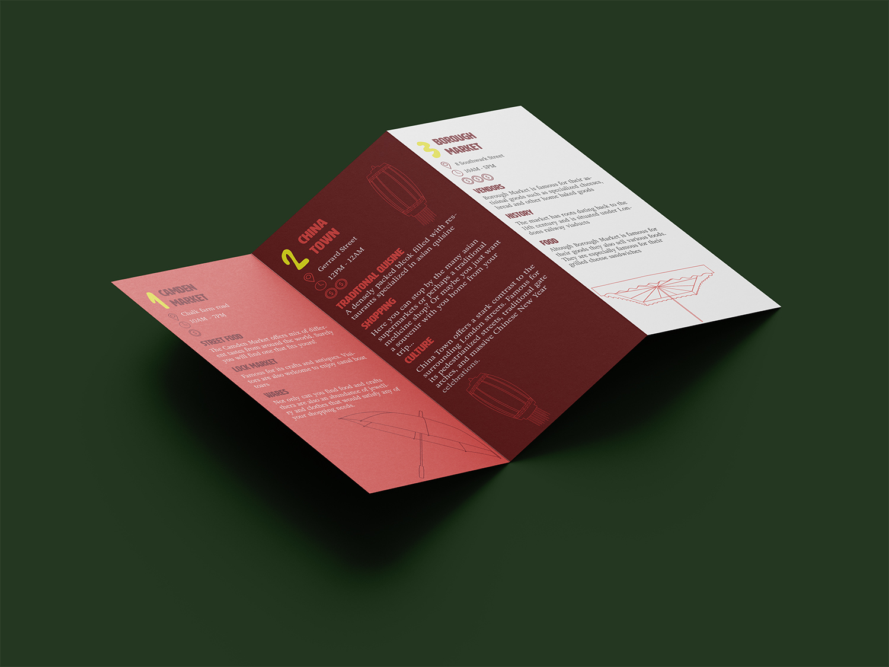
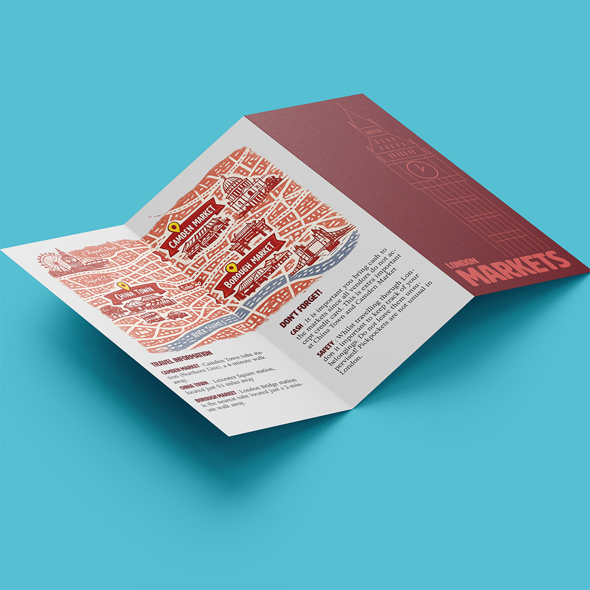
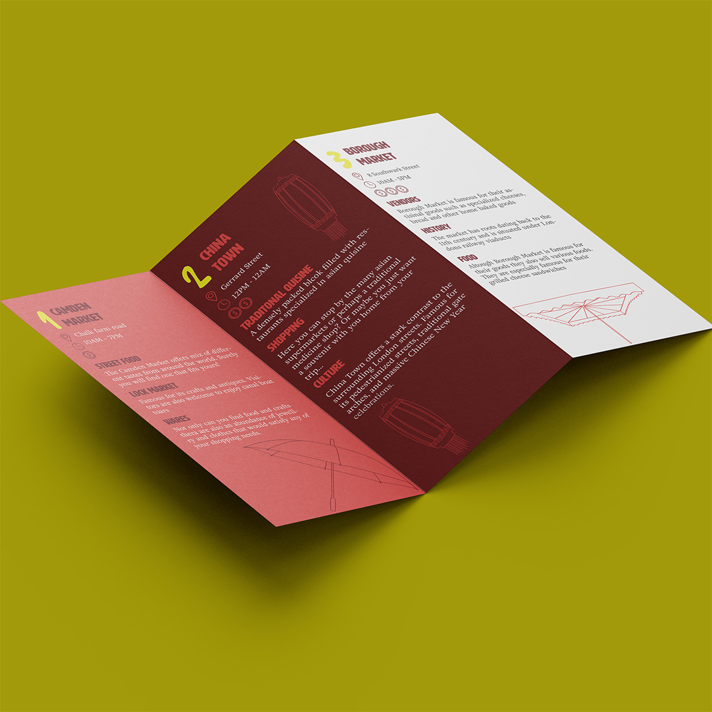
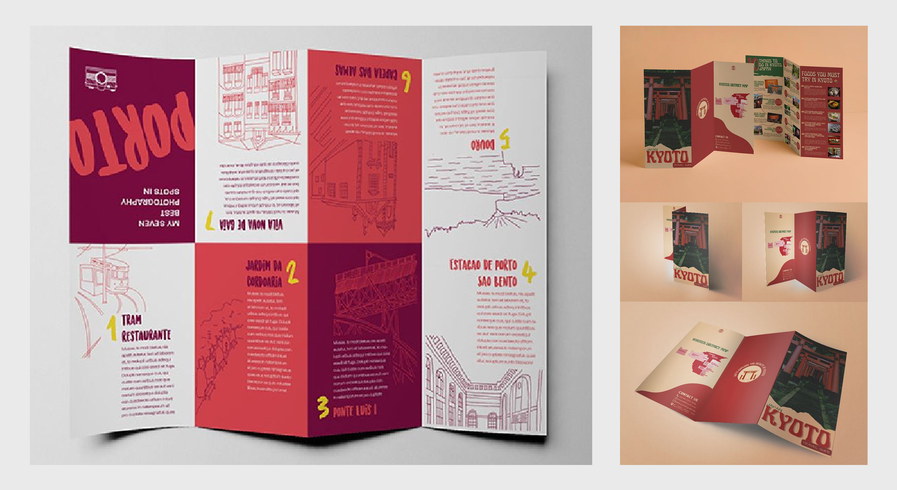
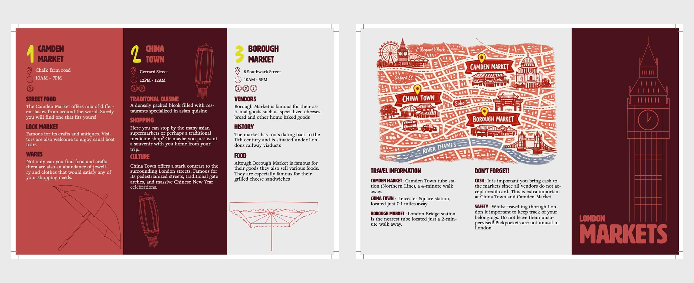

Travel Brochure
A travel brochure for tourists in London

Year
2026
Timeframe
1 Week
My Role
Solo designer
Tools
Photoshop
Illustrator
InDesign
Project overview
London Markets is a printed tourist brochure designed to help visitors discover three of London's most popular markets, Chinatown, Camden, and Borough Market. The brochure is written in English and intended to be sold locally to tourists unfamiliar with the city, offering a quick and visually accessible guide to three distinct market experiences.
The design prioritizes brevity and clarity, presenting key information, location, opening hours, and a price indicator, through icons and headlines rather than body text, allowing readers to get an overview without reading in depth. A two-fold format was chosen deliberately to keep the brochure concise and easy to navigate, with each panel dedicated to a single market.
The color palette is anchored in a deep red referencing England's flag, complemented by pink and white. Custom icons and illustrations were created for each market, drawing on recognizable visual symbols, rice lanterns for Chinatown, umbrellas for Camden, and colored canopies for Borough Market. A Big Ben illustration and a city map reinforce the London setting on the cover and back panel.
All illustrations were exported as SVG to ensure print quality, and the brochure was produced in CMYK at standard settings with 3mm bleed, ready for print.


My design process
An overview of my design process

Research + Sketches
Research was grounded in both personal experience and factual verification. Having visited two of the three markets firsthand, the starting point was already strong, but accuracy required additional research into each market's offerings, atmosphere, and key visual identifiers. From this, three symbolic objects were selected per market to form the basis of the custom illustrations: rice lanterns for Chinatown, the umbrella-lined street in Camden, and the colored canopy stalls of Borough Market.
Visual references were gathered to inform both the layout and color direction. The primary brochure reference inspired the two-fold format, the segmented inner layout, and the cover composition, while the color palette, centered around a deep red, was adapted to better reflect London's visual identity rather than directly copying the reference.


Wireframes + Iterations
The two-fold format was established early and remained consistent throughout, as it aligned with the goal of keeping the brochure concise and easy to navigate. Iteration focused on layout hierarchy, illustration placement, and how much information each panel should carry. A key decision was to lead each market section with practical information, location, opening hours, and a price indicator, allowing readers to make quick decisions without engaging with body text.
The cover went through refinement toward a cleaner, more minimal composition with generous whitespace, moving away from busier early references. Illustrations were developed in Illustrator and exported as SVG files to preserve quality at print resolution. The map on the back panel was AI-generated and styled to match the brochure's visual theme, a decision that would be revisited in a real-world production context.
To visualize the format of the brochure I made a real-life mockup/sketch of the brochure out of paper. This made it easier to then create the format and the folds in InDesign.

Final Design
The final brochure is a two-fold print-ready design produced in CMYK with 3mm bleed and standard margins, a 14mm gutter with 7mm margins, exported as a PDF. Each inner panel is dedicated to one market, differentiated through color and illustration while maintaining a consistent typographic system. Body text is set in a neutral, readable serif sourced from Adobe Fonts, with display headings drawn from the same library and directly inspired by the primary reference. All icons and illustrations were custom-made, with the exception of the AI-assisted map. The result is a clean, visually driven brochure that communicates essential information at a glance, designed for the modern tourist who wants quick answers without having to read through dense content.
